About the Project
The Martian Greenhouse Initiative is a NASA-led mentorship and research program focused on designing food systems for future space missions. Multidisciplinary student teams develop innovative solutions to support plant growth in Martian environments using compact, sustainable technologies.
My Role as Mentor
I served as a mentor for international student teams participating in the Martian Greenhouse program, initially guiding the team from Peru and later working closely with students from Kings College in Belize. My contributions included:
- Providing engineering insight and technical context to support student innovation
- Helping teams understand core design challenges in Martian environments
- Answering questions related to structural, environmental, and materials engineering
- Encouraging collaboration, critical thinking, and solution-oriented exploration
This mentorship role enabled students to grow not only their projects but also their confidence and curiosity in STEM fields.
Why This Matters
Empowering the next generation of engineers and scientists is vital for humanity's long-term goals in space exploration. By supporting teams from underserved and global communities, this program fosters inclusive innovation and prepares young minds to contribute to the future of off-planet sustainability.
Special Thanks
A heartfelt thank-you to Gregg Cannady, whose inspiring leadership and deep commitment to STEM education made this opportunity possible. Gregg’s passion for connecting students to real-world space challenges is reshaping classrooms around the world.
Learn more about Gregg’s mission: LinkedIn
Gallery
A collection of highlights from our collaborative design process and outreach sessions:
 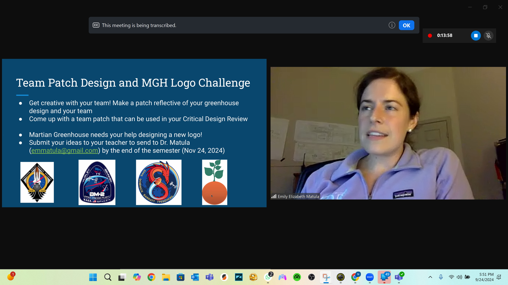
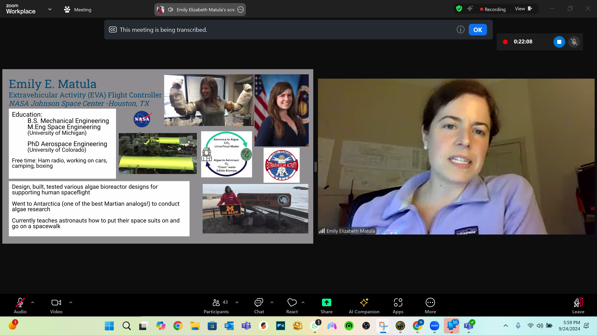
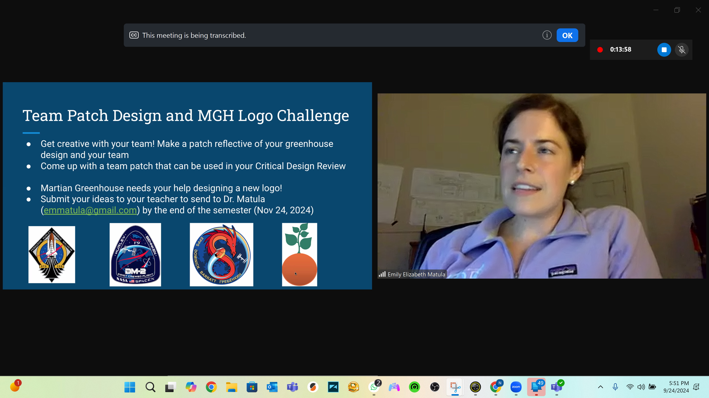
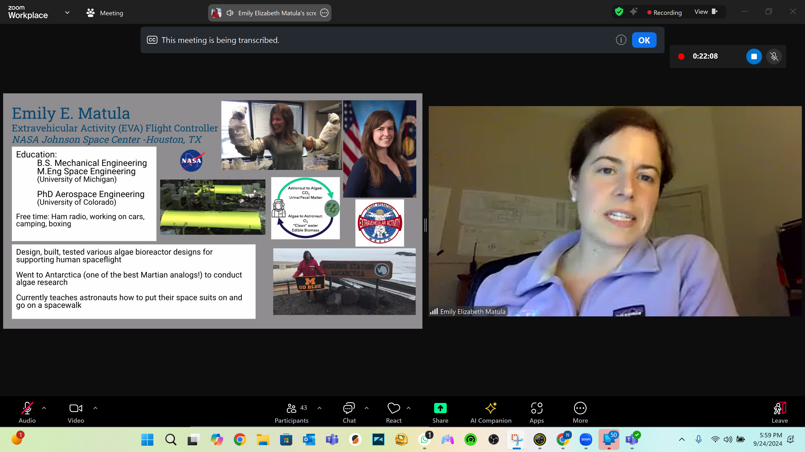

 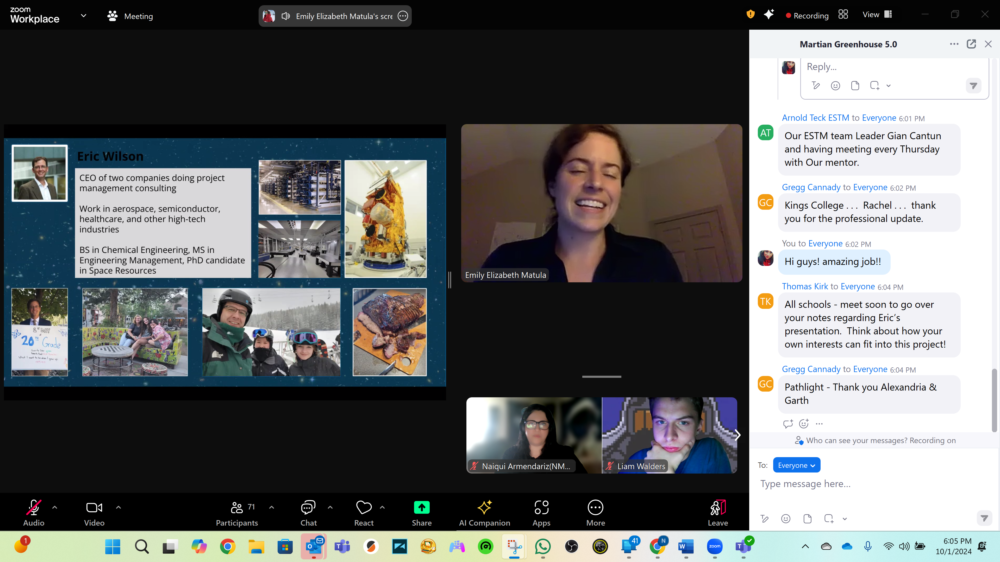
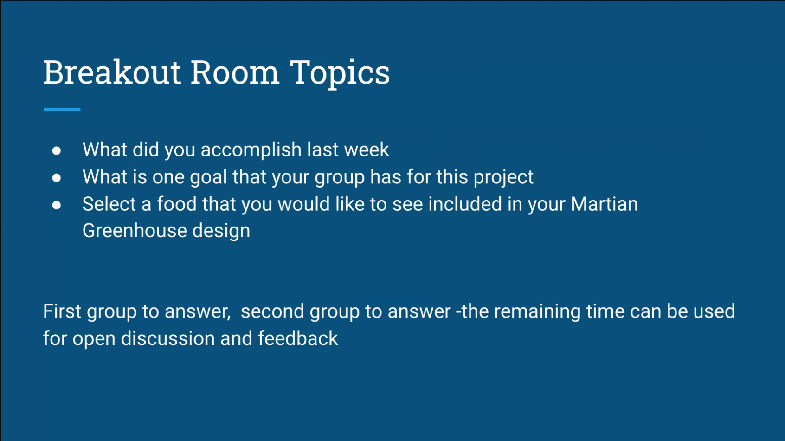
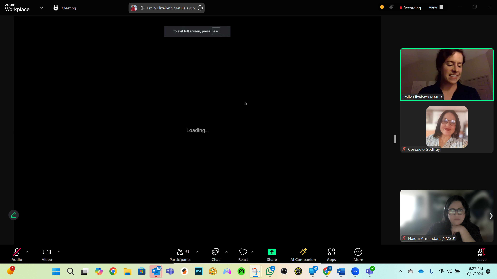
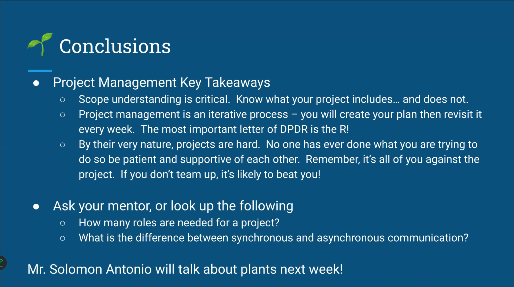
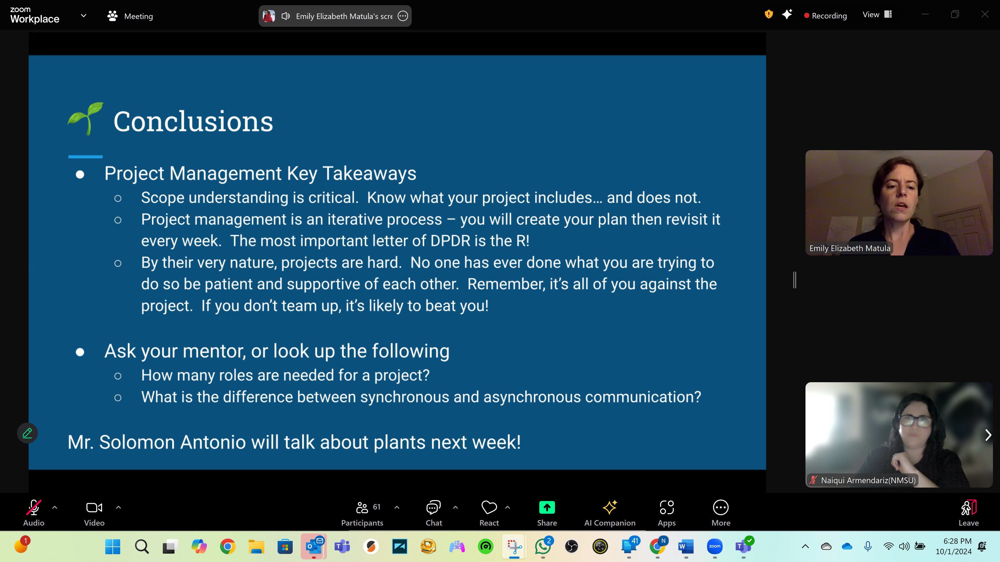
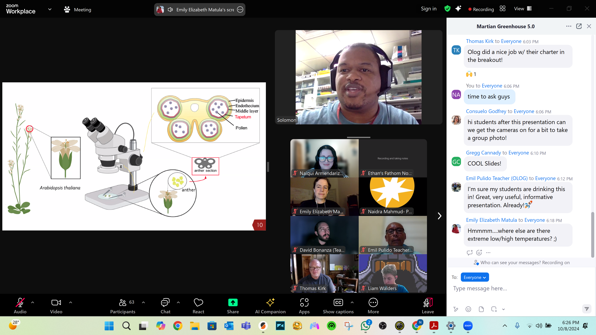
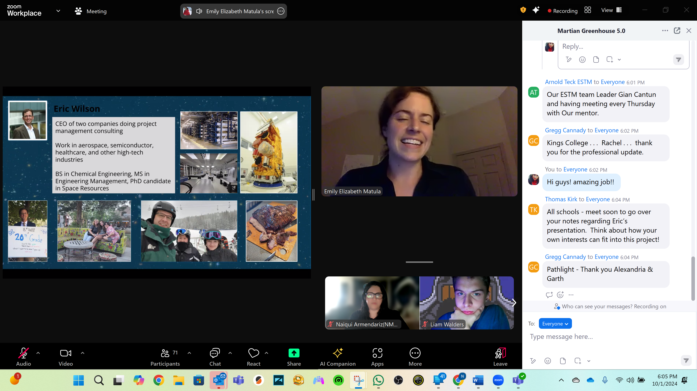
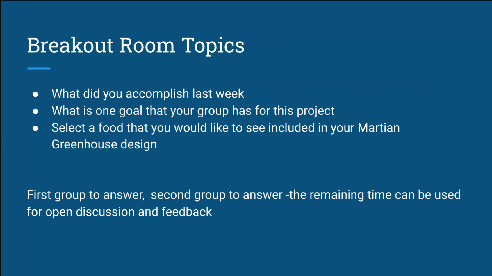
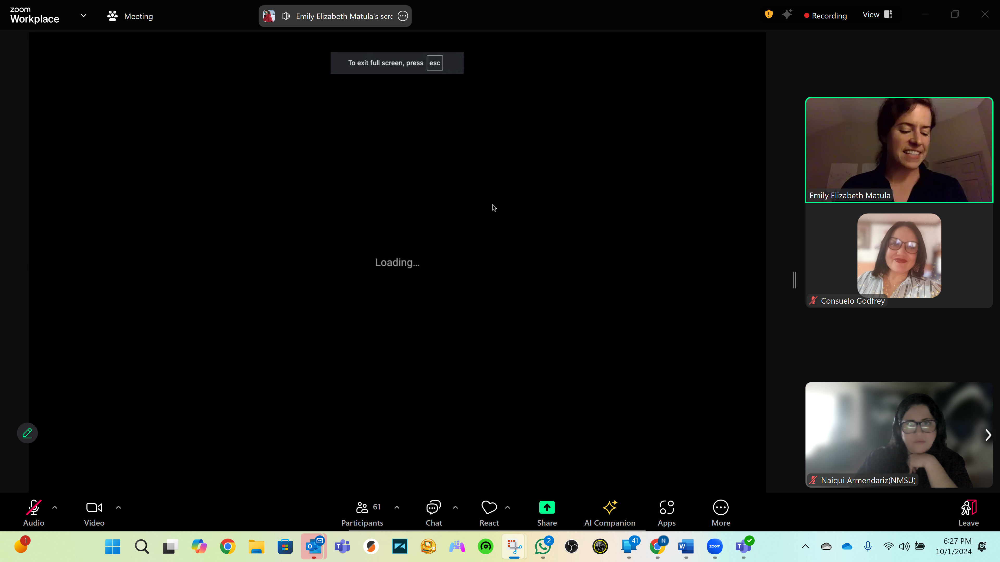
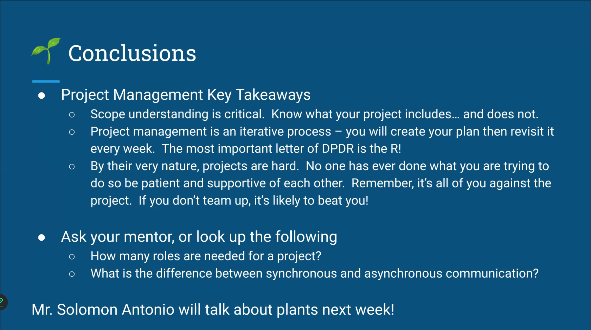
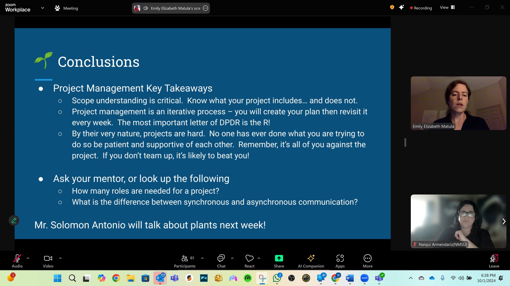
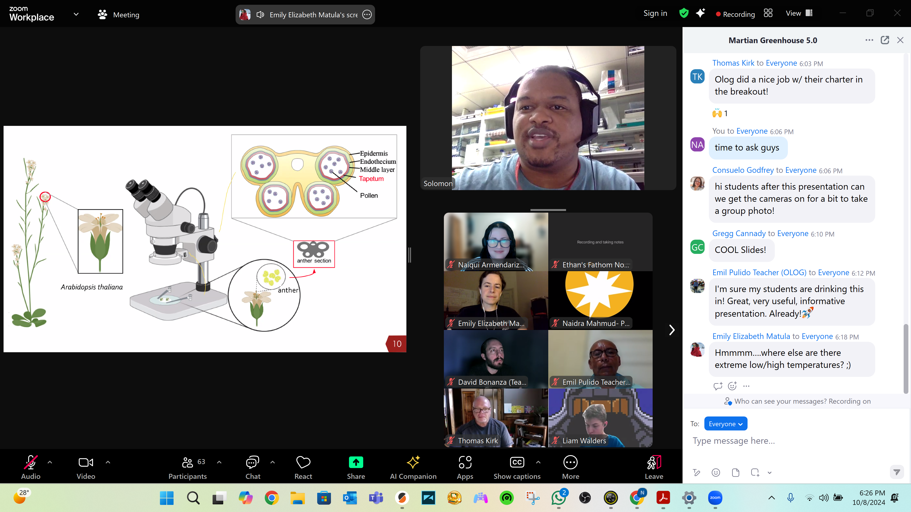
 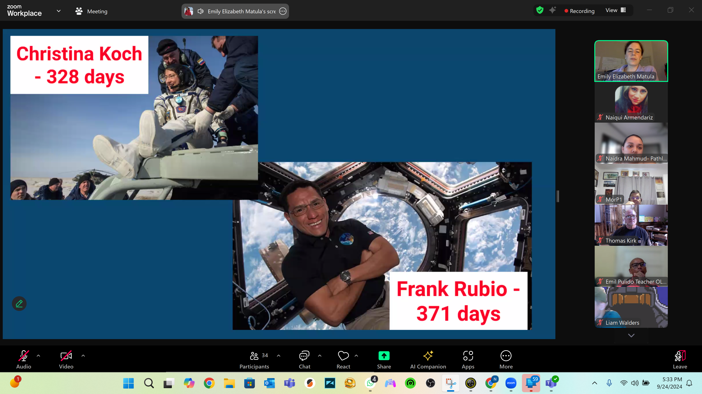
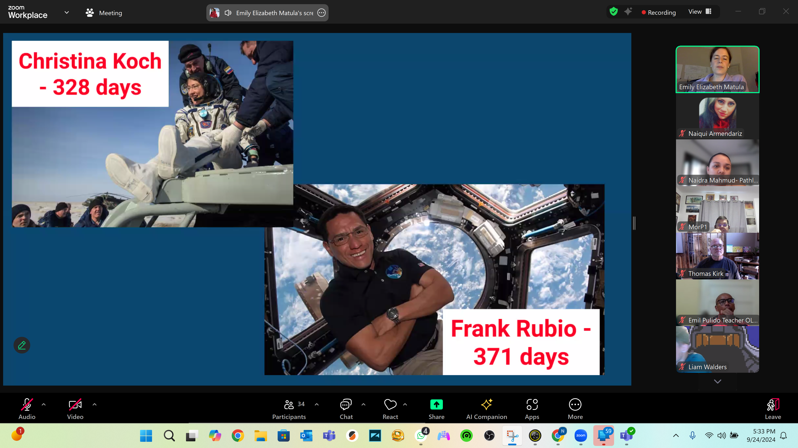